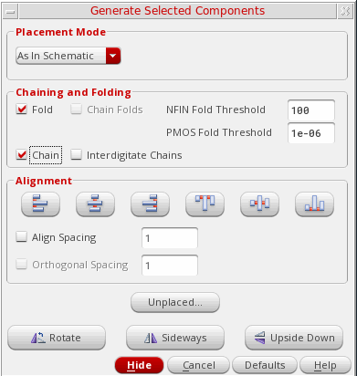
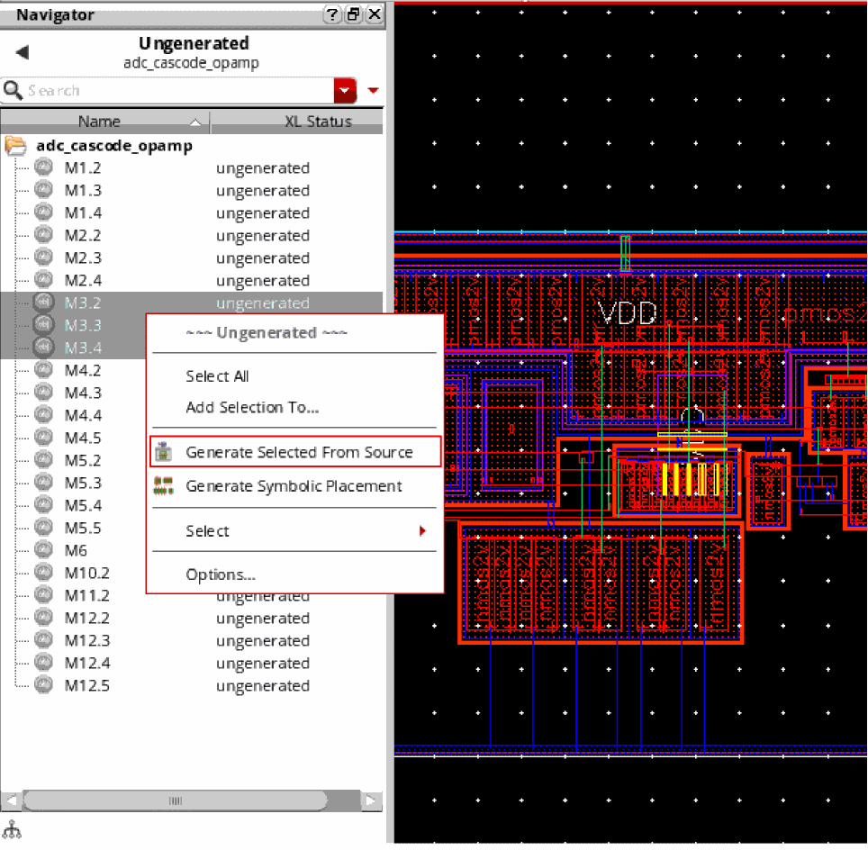
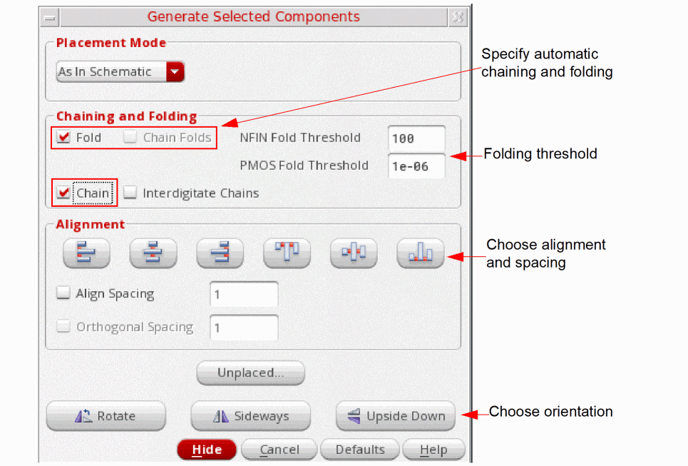
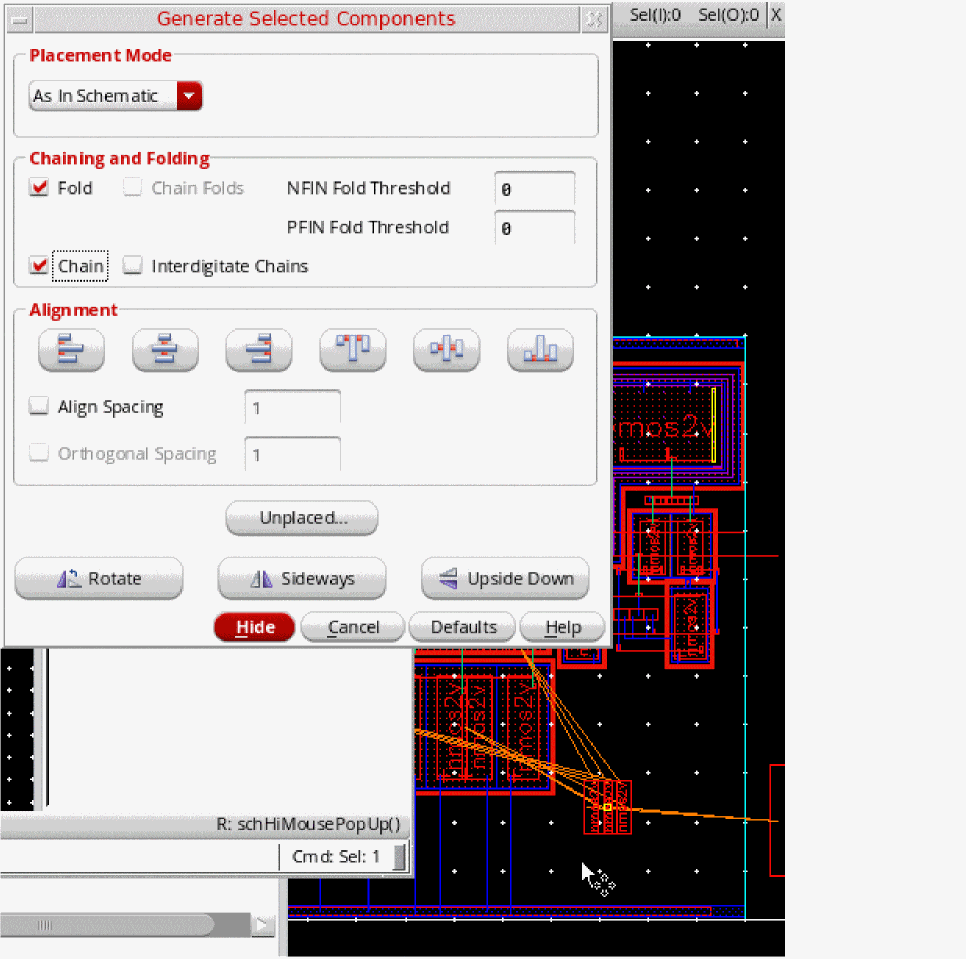

Generating Components As In Schematic
To generate schematic instances and pins in a single operation so that the generated components are placed almost as in the schematic view:
- From the layout window menu bar, choose Connectivity – Generate – Selected From Source.
-
Press
F3to display the Generate Selected Components form.
As In Schematic mode is enabled as the default Placement Mode.However, if you change the placement mode, the form opens with the last selected placement mode when opened the next time.
In the As In Schematic mode, you cannot change the properties and attributes associated with the selected components. However, you can set pseudoparallel nets. See Connectivity Extraction in Layout XL. -
In the schematic window, select the instances and pins you want to generate using one of the following methods.
-
Click the components in the schematic canvas or Navigator assistant. To select multiple components, keep the
Shiftkey pressed during selection. Alternatively, drag to enclose an area that has only the components that you want to select. To deselect a component, click the component while theCtrlkey is pressed. - Click Unplaced to view the Instance/Pin List form, select the components you want, and click Apply to select them in the schematic window. See Listing Unplaced Components after Layout Generation.
- Right-click the ungenerated instances in the layout Navigator assistant and choose Generate Selected From Source, as shown in the figure below.
The selected instances remain highlighted until they are either deselected or generated in the layout view. You can select an instance in the schematic if it is not already bound to an instance in the layout. If an existing layout instance with a matching name is not bound to the selected schematic instance, the name of the instance generated in the layout is determined based on therenameConflictingLayoutInstancesenvironment variable.
PressF3if the Generate Selected Components form is not displayed automatically.
 -
Click the components in the schematic canvas or Navigator assistant. To select multiple components, keep the
-
Move your pointer into the layout canvas.
The outlines of the selected components follow the pointer in the canvas. -
Set the options you want for the selected components.
- (Optional) Select Chain and Fold to automatically chain and fold the instances you are generating. To chain the individual folds of a transistor, select the Chain Folds check box.
- (Optional) Select Interdigitate Chains to automatically identify the nodes that qualify as pseudoparallel connections and define them during chaining and abutment.
- (Optional) Use the Alignment options to automatically align and space the components as they are placed. For example, set Align Spacing to 2 to automatically space the selected instances by 2 user units when they are generated and then click Align Bottom to align the bottom edges.
- Choose the orientation you need using the Rotate, Sideways, and Upside Down buttons.
-
Click in the layout canvas to place the selected components at the required location.
Iterated pins placed in the schematic are placed in order (i.e.Q1,Q2,Q3) in the layout.
The selected components are generated in the layout view replicating their schematic placement, as shown in the figure below.

Related Topics
Generate Selected Components Form
Return to top